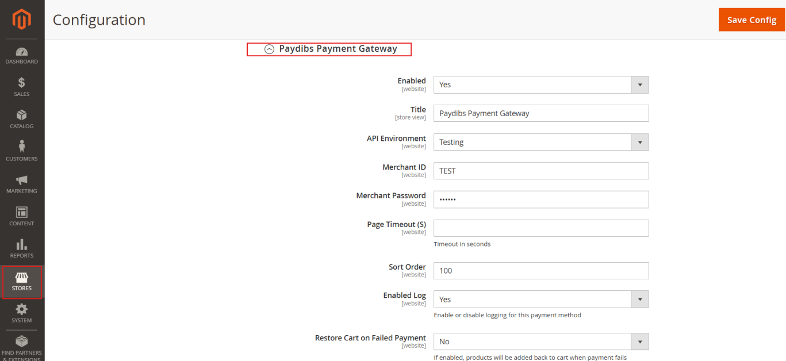
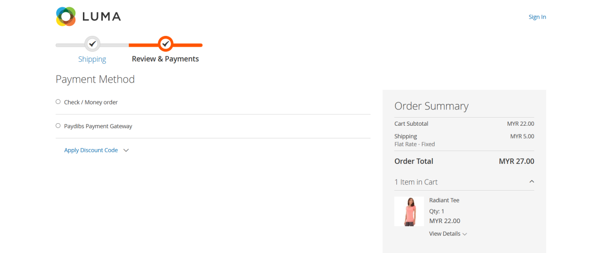
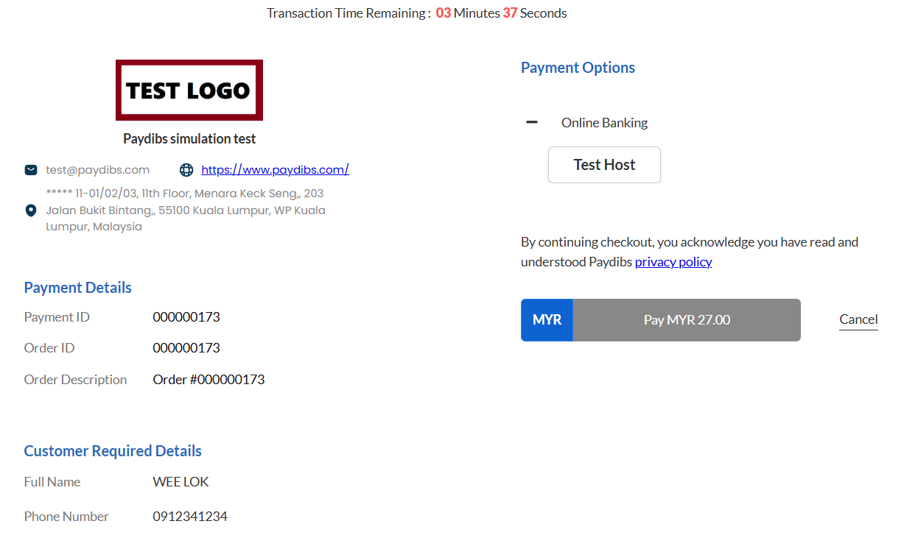
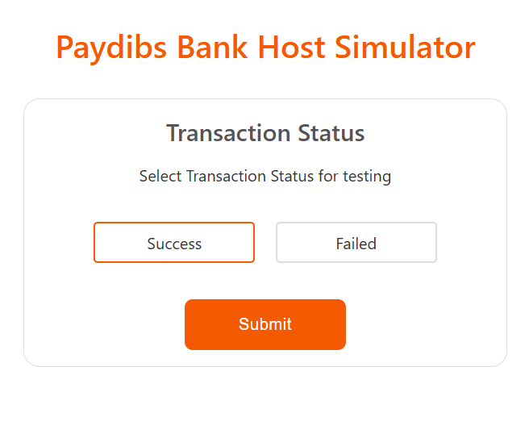
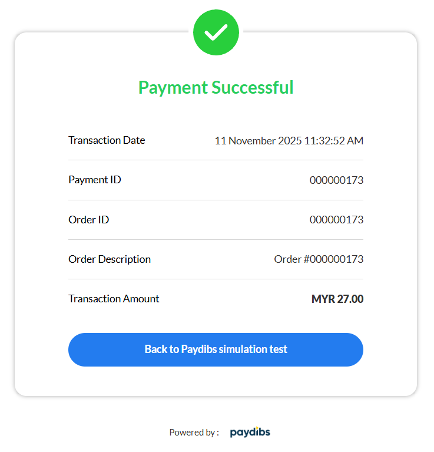
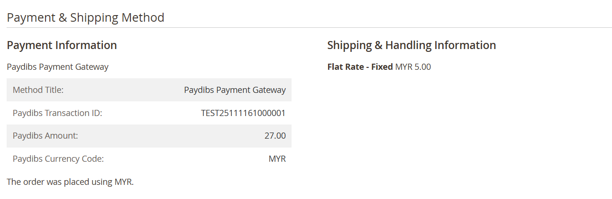

For merchants and developers · Composer: paydibs/module-paymentgateway · Magento Open Source 2.4.x
If you run a Magento Open Source store and want customers to pay through Paydibs, this module connects your checkout to Paydibs’ hosted payment flow. The shopper places an order, pays on Paydibs, then returns while Magento updates the order from Paydibs’ responses (return URL, server notification, and optional background checks). You keep your normal order and invoice workflow—only the payment rail changes.
composer.json for framework constraints.From your Magento project root:
composer require paydibs/module-paymentgateway
bin/magento module:enable Paydibs_PaymentGateway
bin/magento setup:upgrade
bin/magento setup:di:compile
bin/magento cache:flushIf you use a ZIP or path repository, point Composer at the folder that contains this package’s composer.json, require the package, then run the same bin/magento commands. Confirm with bin/magento module:status Paydibs_PaymentGateway — it should show enabled.
Open Stores → Configuration → Sales → Payment Methods → Paydibs Payment Gateway. Enter your Merchant ID and Merchant Password from Paydibs, choose Test or Production, and enable the method when ready.

On the payment step, customers can choose Paydibs like any other method.

After place order, the browser continues on Paydibs to complete payment.

In test environments you may use Paydibs’ simulator to pick success or failure.

After a successful payment, the customer sees confirmation before returning to your store.

Transaction details appear on the order for support and reconciliation.

A cron job runs about every 15 minutes to recheck pending Paydibs orders—ensure Magento cron is running in production. An optional manual requery URL exists if you configure a secret; leave it empty if you do not need it.
Apache License, Version 2.0 — see LICENSE.txt and NOTICE.txt in the package.
Screenshots sourced from Paydibs Magento user reference material. UI may vary slightly by Magento theme and Paydibs environment.